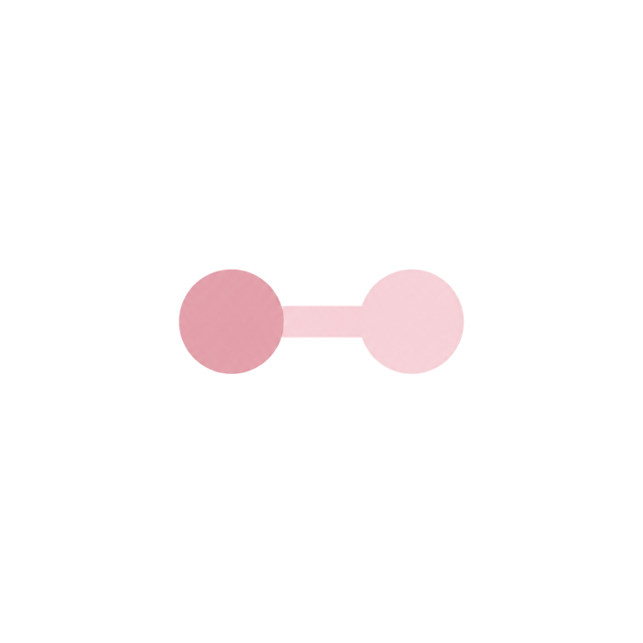
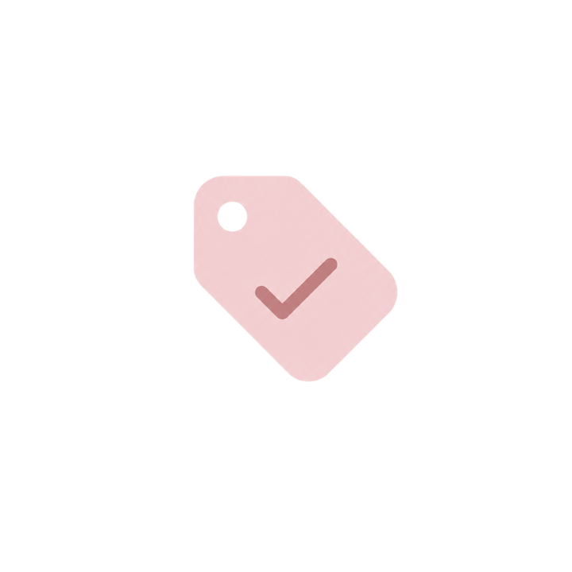

חממת אתחלתא
המיקום: מתקיימת ברשות המקומית, בסמוך לבתי הספר ובמרכזי הפסג״ה.
הרכב הקבוצה: גמיש. ניתן להקים קבוצה הומוגנית הכוללת קהל יעד אחד, או קבוצה הטרוגנית המשלבת מתמחות ומורות שנה א׳.
גודל מומלץ: עד 25 משתתפות לליווי מיטבי.
תוכנית אתחלתא מיועדת למחנכות כיתה בשלב הכניסה להוראה. חממות וסדנאות אתחלתא למחנכות כיתה חדשות, בדומה לכלל החממות והסדנאות הפועלות במסגרת שלב הכניסה להוראה, יכולות לתת מענה לשתי אוכלוסיות.
לחצו על כפתור הציר כדי להכירן.

מחנכות יכולות להשתתף בחממה לאורך שנתיים, להתחיל כמתמחות ולהמשיך בשנת המורה החדש.

אין לצרף לחממות ולסדנאות אתחלתא מתמחות ומורות חדשות שאינן מחנכות כיתה. במידת הצורך ובמקרים חריגים בהחלט, יינתן לכך אישור מיוחד על-ידי מנהלת תוכנית אתחלתא.
ישנן שתי אפשרויות למסגרות ליווי בתוכנית אתחלתא:
המיקום: מתקיימת ברשות המקומית, בסמוך לבתי הספר ובמרכזי הפסג״ה.
הרכב הקבוצה: גמיש. ניתן להקים קבוצה הומוגנית הכוללת קהל יעד אחד, או קבוצה הטרוגנית המשלבת מתמחות ומורות שנה א׳.
גודל מומלץ: עד 25 משתתפות לליווי מיטבי.
המיקום: מתקיימת במוסד האקדמי.
הרכב הקבוצה: הומוגנית בלבד. מיועדת למתמחות בלבד בהיקף של 60 ש״ש, או למורות חדשות בלבד בהיקף של 30 ש״ש.
גודל מומלץ: עד 25 משתתפות לליווי מיטבי.
שימו לב: לא ניתן לקיים סדנה הטרוגנית הכוללת מתמחות ומורות חדשות יחד בקמפוס המוסד האקדמי.